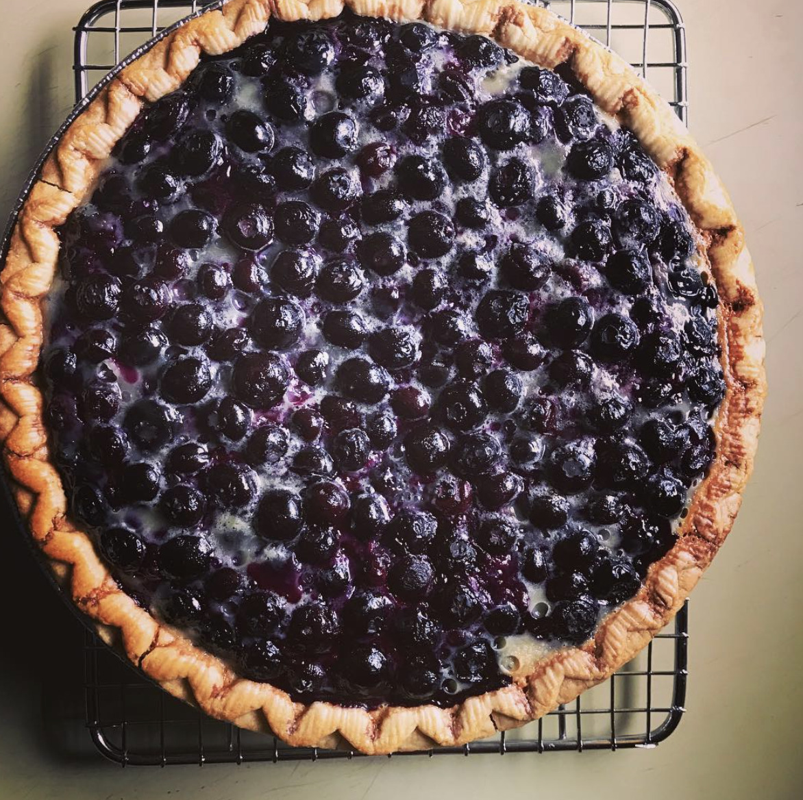

Blueberry Custard Pie

Description
This is Kevin Belton's recipe for a blueberry custard pie,
combining juicy blueberries with a creamy custard filling.
Ingredients
- 1 1/2 cups granulated sugar
- 1 cup buttermilk
- 3 large eggs
- 1 tablespoon (1 oz.) unsalted butter, melted
- 1 teaspoon vanilla extract
- 1/2 cup all-purpose flour
- 1/4 teaspoon kosher salt
- 1 1/2 cups fresh blueberries or frozen blueberries, thawed
- 1 9-inch (23 cm) store-bought or homemade pie crust, unbaked
Steps
- Preheat oven to 350°F (180°C).
- In a large bowl, whisk sugar, buttermilk, eggs, butter,
and vanilla until well combined. Add flour and salt and whisk until
no dry flour remains. Gently stir in blueberries until well incorporated.
- Place pie crust in a 9-inch (23 cm) pie plate. Pour pie filling into
pie crust. Bake until just set, 50 to 60 minutes. (Note: Ensure pie plate can
hold 5 cups of filling!)
- Cool at room temperature for 1 hour. Refrigerate for at least 2 hours before
serving.